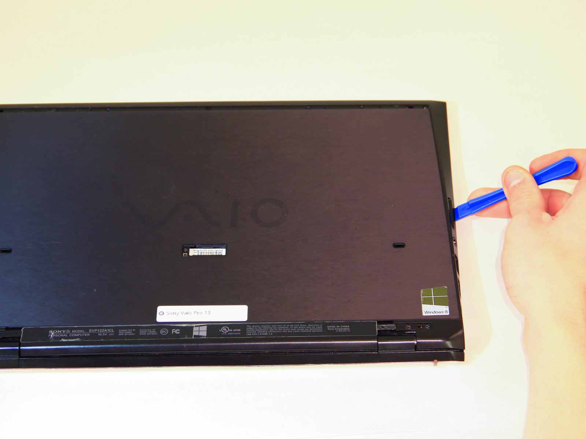
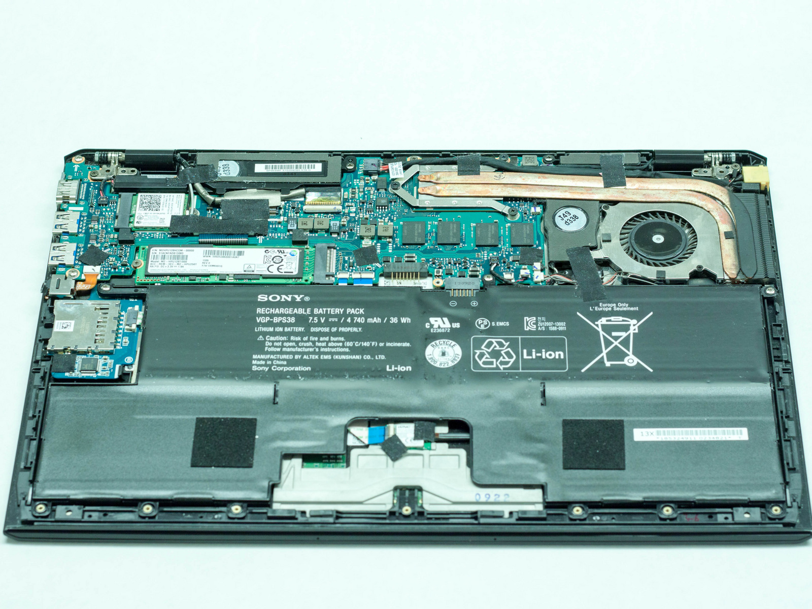

 Using a plastic opening tool, pry the plastic casing away from the base of the computer, the remaining clips around the edges can be released using your hands.
 Leave the side with the USB and audio port until last, then slide the case out and off, so the audio port doesn't get caught.